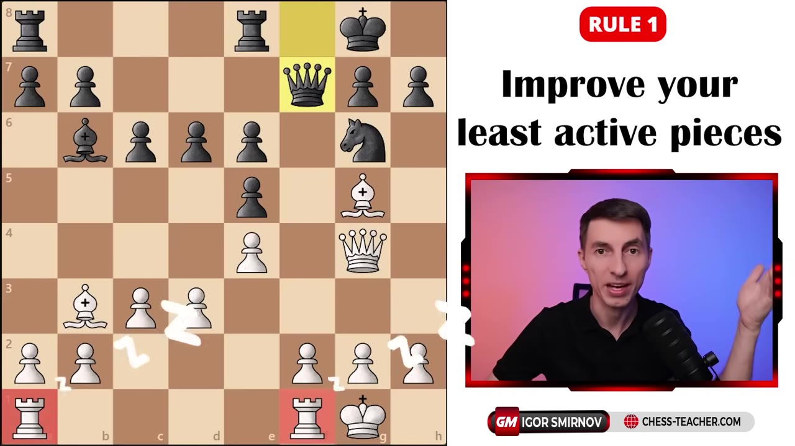
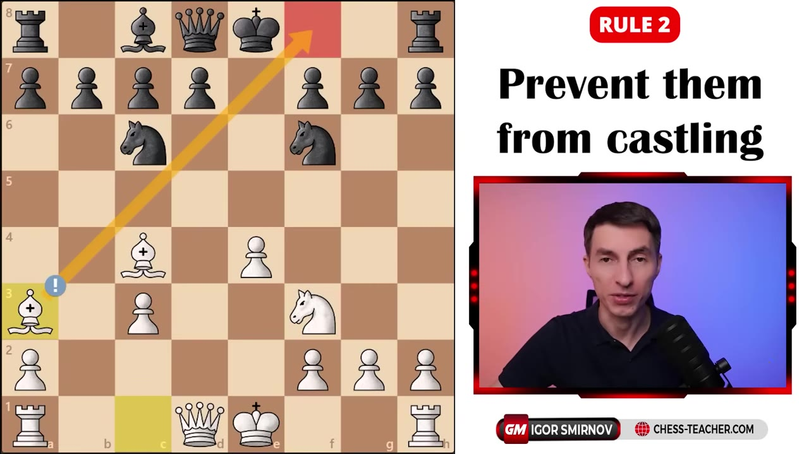
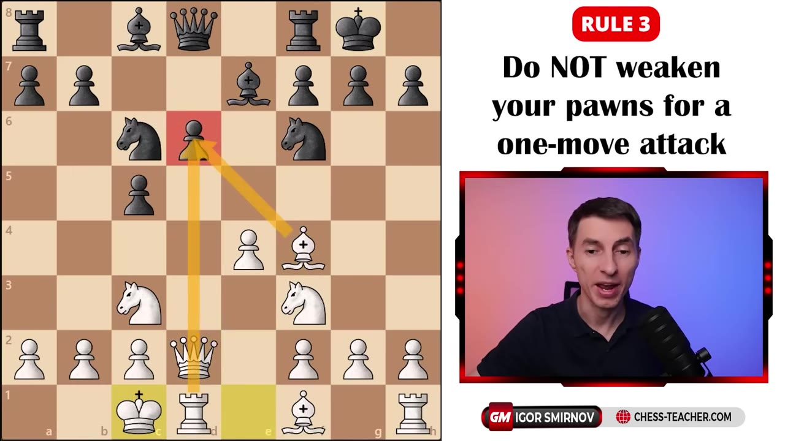
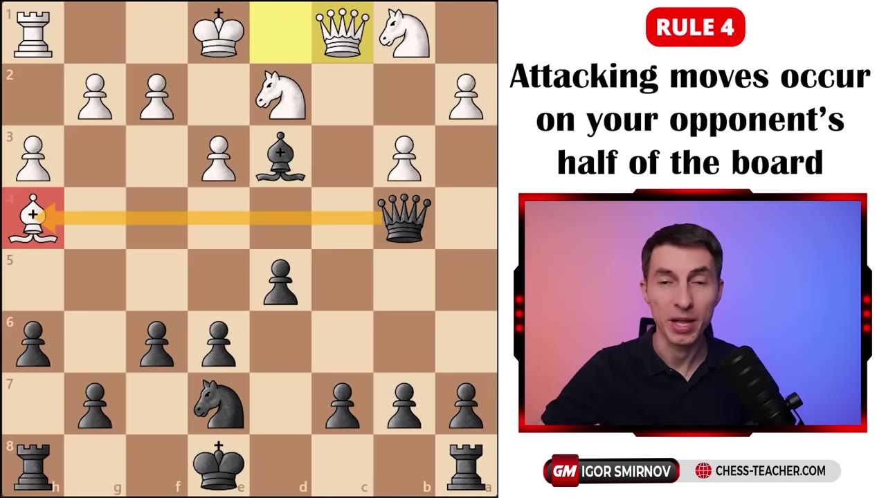
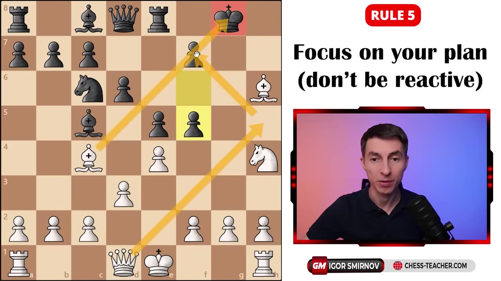
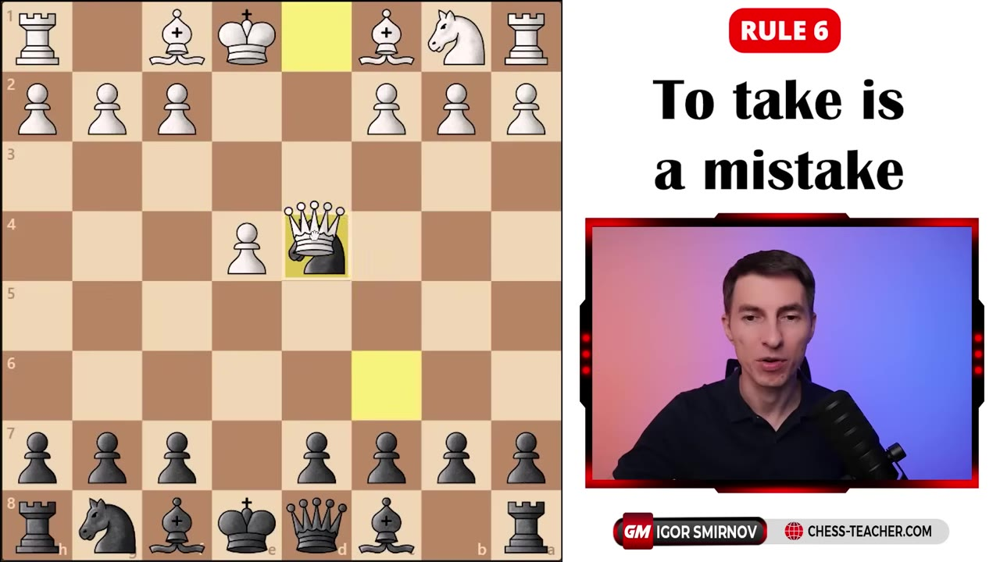
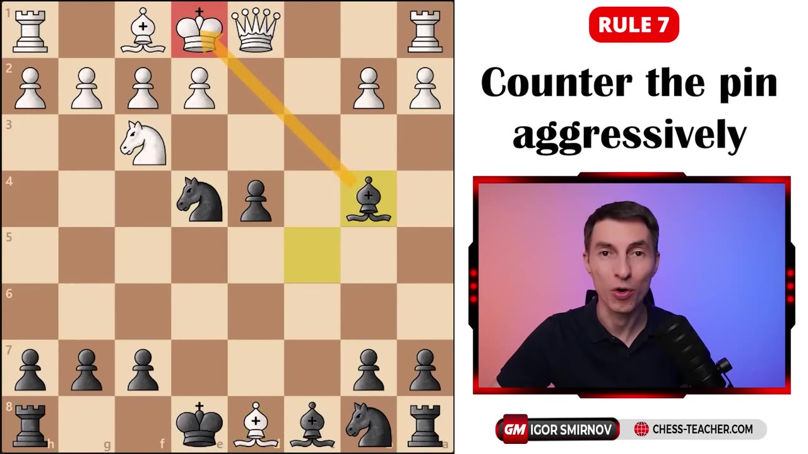
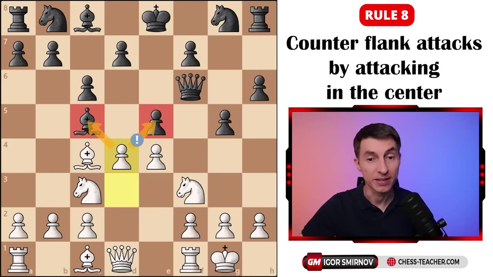
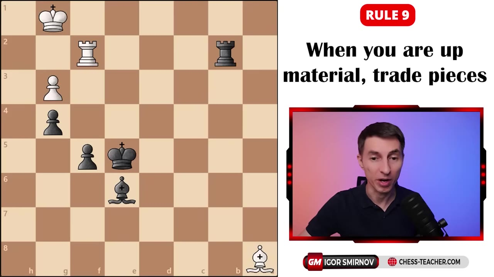
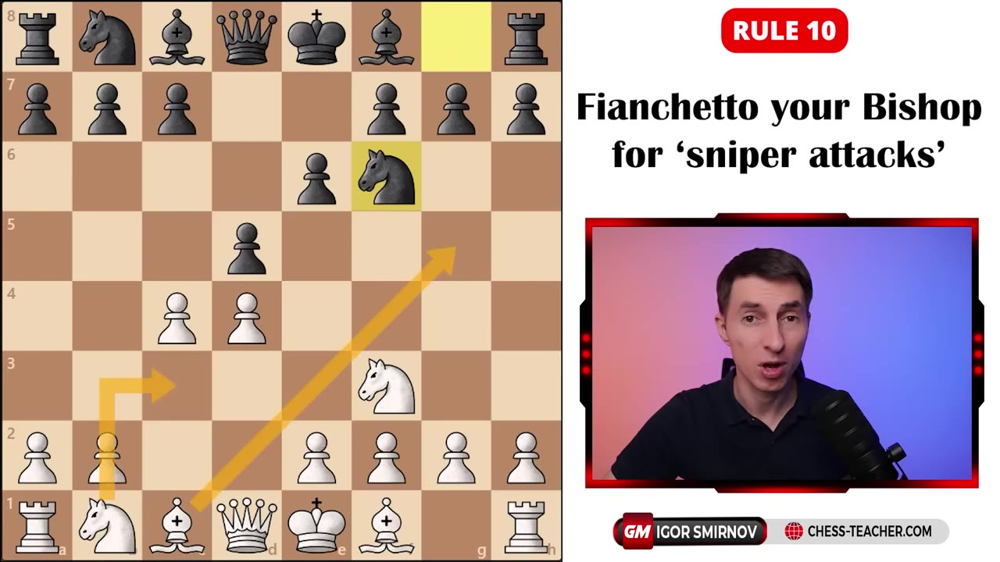

You finish the opening, both sides have castled, and now you stare at a board full of plausible moves. Ten rules for picking the right one — when to activate a rook, when to refuse a trade, and why strong players never just react.
Watch on YouTubeBoth sides have developed and castled, and there are five reasonable moves on the board. The way to choose: look at which pieces are already working — here the queen and both bishops are pressing — and find the ones that are dozing. The two rooks are doing nothing. Now ask how to wake them up. The plan is to get the king off the f-file with g3 and Kg2 so f4 can come, the f-file opens, and the rooks pour in.

Most players here castle, push e5, or pin with Bg5. The strong move is Ba3 — taking away the opponent's right to castle. People have heard of this idea but underestimate it. If the enemy king is stranded in the center, you keep attacking it and there is often nothing to be done.

If your opponent's king stays in the middle of the board, you can keep attacking it and there's nothing really that your opponent can do to stop your attack.— GM Igor Smirnov
Common below 1000: shoving a pawn to make a single threat. The attacked piece simply steps away — and the weakness you created stays for the rest of the game. Here Black moved a pawn from c7, where it was nicely protected, to c5, and now both that pawn and the squares around it are permanently weak, with no good way to defend them.

This is one of the biggest dividers between strong players and the rest. Attacking moves occur on your opponent's half of the board. Instead of castling or trading, look at the far side and ask: how do I make a forcing move there — a check, a capture, a real threat? In the example both players were rated around 1000 and both missed a queen capture that was checkmate in one, because neither was looking at the right half of the board.

A player whose bishop is attacked usually just retreats it or trades — reacting to the last move. Strong players are relentless about their own plan. Here, instead of saving the bishop, White keeps disrupting Black's pawn chain, and even when a knight ends up hanging, the answer isn't to rescue it — it's to bring a third attacker against the exposed king.

The pony saved is a pony earned, right? And they'll move the knight somewhere. And guess what happens next?— GM Igor Smirnov
The classic "to take is a mistake." Capturing on d4 here is the most-played move and it's wrong. You can only trade off your active piece — your passive pieces are too far away to swap. Worse, your active piece is gone while the opponent's active piece is replaced by another, so his stays. You hand him a positional edge. Same logic with pawns: if you trade, be sure you're paid.

When a knight is pinned, most players settle for passive defense. There are usually far more active answers — sometimes you ignore the pin entirely, sometimes you hit the weak squares the pin created. Here Black pushes the pawn, carries on his own plan, and is even willing to give up the queen, following up with a bishop check that leaves Black up a piece in a winning endgame.

Counterintuitive, and almost never used below the strong level: when your opponent attacks on the flank, strike back in the center. The instinct is to defend the threatened wing with something like h3. Instead, force yourself to look at the four central squares and find a break there — even a pawn sacrifice — to open lines and launch your own play.

A cliché, but here you watch Gukesh trade rooks and then bishops against Ding Liren to cash in. Trading when ahead does two things: it removes risk — once the pieces are off, there's nothing left to blunder — and it leaves a clean winning plan, in this case promoting a pawn with the king's support and mating with the extra queen.

Strong players fianchetto far more than the rest. A bishop tucked on the long diagonal sits in ambush like a sniper, and opponents forget about it. It can't be easily attacked — it's deep in your own territory — yet it applies long-term pressure and shields your king. It's why Carlsen, Caruana, and the elite reach so often for the Catalan instead of casual developing moves.

A king fianchetto shelters the king and makes a black attack much harder to generate.
The long-diagonal bishop applies quiet, lasting pressure across the board.
Tucked deep in your own territory, the bishop is almost impossible to attack.